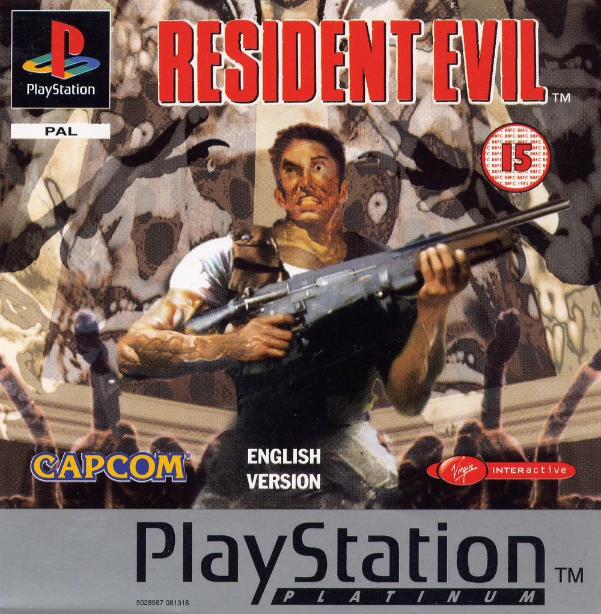

Resident Evil (1996)

Resident Evil, lançado pela Capcom em 1996, é o jogo que redefiniu o gênero survival horror. A história segue os membros da equipe S.T.A.R.S. — Chris Redfield, Jill Valentine e Barry Burton — que investigam assassinatos misteriosos nos arredores de Raccoon City.
Eles acabam presos em uma mansão que abriga experimentos da Umbrella Corporation, enfrentando criaturas mutantes e puzzles tensos.
Vendas aproximadas: 5 milhões de cópias.
Impacto: Criou a base do survival horror moderno.